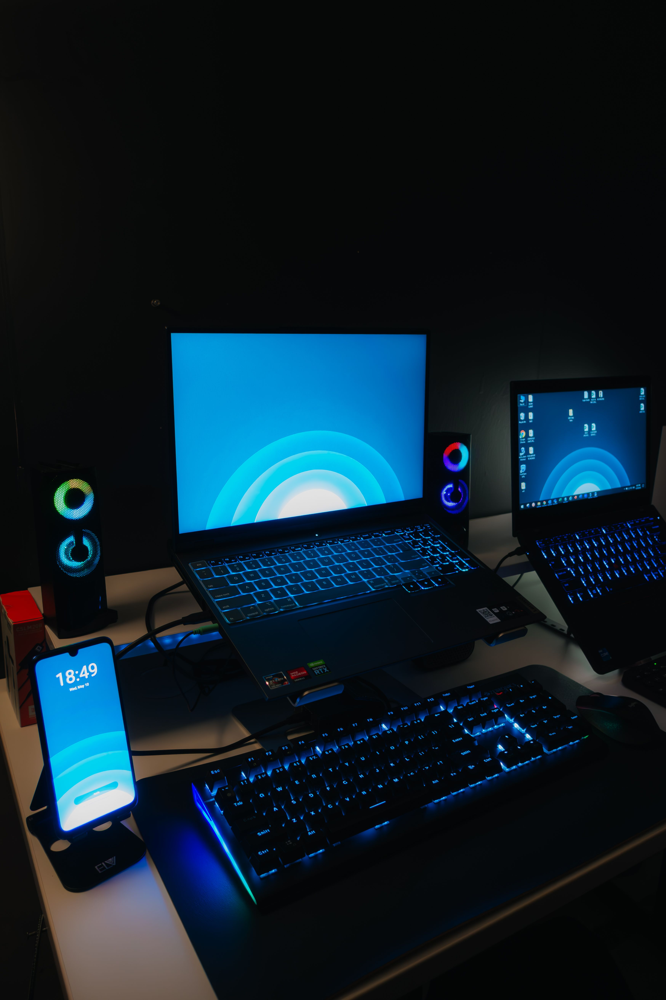
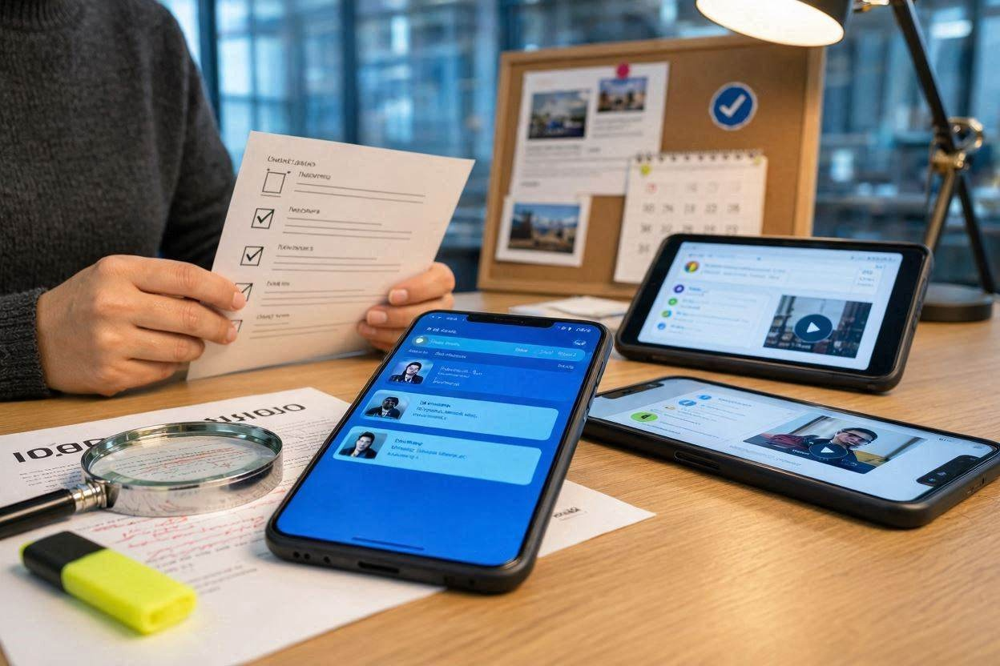

About Me
A little about who I am, my interests, and my journey as a software development student.
Welcome to my blog! Here I share my interests, experiences, ideas about technology, and my journey learning English while studying software development.
Explore my posts →Learning
and creating
My name is Deivison Andres Yotagri Velez. I am 18 years old and I am a student of Analysis and Software Development (ADSO) at SENA.
I created this blog to share my interests, my experience as a software development student, my thoughts about technology, and my English learning journey.
Explore my interests, experiences and ideas.
A little about who I am, my interests, and my journey as a software development student.
Video games, music, instruments, series, exercise, and the activities I enjoy.
My experience as an ADSO student, challenges, projects, and future goals.

04How technology influences the way I study, communicate, work, and relax.
My thoughts about artificial intelligence, its opportunities, and its risks.

06Why we should verify information before believing or sharing it online.
My thoughts about crime, punishment, prevention, and rehabilitation.
My name is Deivison Andres Yotagri Velez. I am 18 years old and I am currently studying Analysis and Software Development (ADSO) at SENA.
I am a calm, responsible and persevering person. I enjoy programming, video games, music, playing instruments, watching series, and exercising.
One of my goals is to improve my English, speak fluently, and eventually work for a foreign company as a software developer.